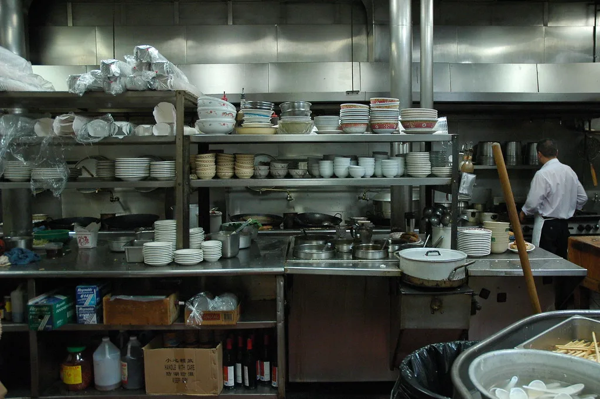

분당 중식당 페인트·농약 테러…용의자 중국인 4명 범행 당일 출국
경기 성남시 분당구의 한 중식당이 괴한들의 테러 범행 대상이 된 사실이 뒤늦게 알려지며 파문이 일고 있다. 경찰에 따르면 지난 24일 오전 2시 40분쯤 20~40대 중국 국적 남성 4명이 이 중식당에 침입해 매장 곳곳에 페인트를 칠하고 주방 식재료에 농약으로 추정되는 물질을 뿌린 뒤 달아났다. 추석 연휴를 앞두고 벌어진 이번 사건은 피해 규모와 치밀한 범행 수법이 뒤늦게 알려지면서 적잖은 충격을 안겼다. 매장을 다시 열지 못한 업주는 뒤늦게 피해 상황을 확인하고 경찰에 신고한 것으로 전해졌다.
경기 분당경찰서는 공동재물손괴 등 혐의로 이들의 신원을 특정했다고 밝혔다. 용의자들은 마스크와 모자로 얼굴을 가린 채 약 1시간에 걸쳐 범행을 저지른 뒤, 택시를 여러 차례 갈아타며 서울 시내 숙소로 이동했다. 이후 인천국제공항을 통해 각각 중국 옌타이와 상하이 등지로 출국한 것으로 확인됐다. 경찰은 이들이 국내에 머무는 동안 여러 대의 택시를 번갈아 이용해 추적을 피하려 한 정황도 함께 확인했다.
경찰은 명절 연휴 기간 식당이 휴업한다는 점을 이들이 미리 파악한 뒤 범행 시점과 도주 경로까지 사전에 계획한 정황이 있다고 보고 있다. 실제로 용의자들은 범행 직후 곧바로 도주하지 않고 서울 시내 숙소를 거쳐 공항으로 이동하는 등 비교적 치밀한 동선을 보였다. 경찰은 CCTV 분석을 통해 이들의 이동 경로를 재구성해 신원을 특정하는 데 활용했다.
경찰 조사 결과 이번 범행의 배경에는 해당 식당의 상호가 자리하고 있는 것으로 파악됐다. 식당이 중국 최고지도자의 이름을 내건 상호를 사용해온 데 대해 용의자들이 반감을 품고 표적으로 삼아 범행을 저질렀다는 것이 경찰의 판단이다. 단순한 재물손괴를 넘어 특정 상호에 대한 불만이 조직적 범행으로 번졌다는 점에서 사안의 성격이 가볍지 않다는 지적이 나온다. 해당 식당은 수년째 같은 상호로 영업을 이어왔지만 이번과 같은 범행은 처음 겪는 일이라고 전해졌다.
용의자들이 범행 당일 곧바로 출국하면서 경찰의 신병 확보는 사실상 불가능해진 상태다. 경찰은 이들에 대해 입국 시 통보 조치를 요청했으며, 국제형사경찰기구 등을 통한 국제사법공조 절차에도 착수했다. 다만 용의자들이 이미 중국에 머무는 것으로 추정되는 만큼 실제 신병 인도까지는 상당한 시일과 외교적 절차가 필요할 것으로 예상된다.

이번 사건은 특정 국적이나 상호를 겨냥한 보복성 범행이 국내에서도 발생할 수 있다는 우려를 낳고 있다. 자영업자 단체 등에서는 유사 사건 재발을 막기 위한 방범 대책 마련을 요구하는 목소리도 나온다. 상가 밀집 지역을 중심으로 심야 시간대 순찰을 강화해야 한다는 지적도 함께 제기되고 있다. 인근 상인들 사이에서는 늦은 밤 출입문 보안을 강화해야 한다는 자성의 목소리도 나오고 있다.
경찰은 확보한 단서를 토대로 계속 수사를 이어가는 한편, 관련 부처와 협의해 국제공조 수사에 속도를 낼 방침이라고 밝혔다. 용의자들의 신병이 실제로 확보되기까지는 시일이 걸릴 것으로 보이지만, 경찰은 국제사법공조를 통해 끝까지 추적하겠다는 입장을 분명히 했다. 외교당국도 필요한 경우 영사 채널을 통해 수사 협조를 지원할 수 있다는 뜻을 내비쳤다.